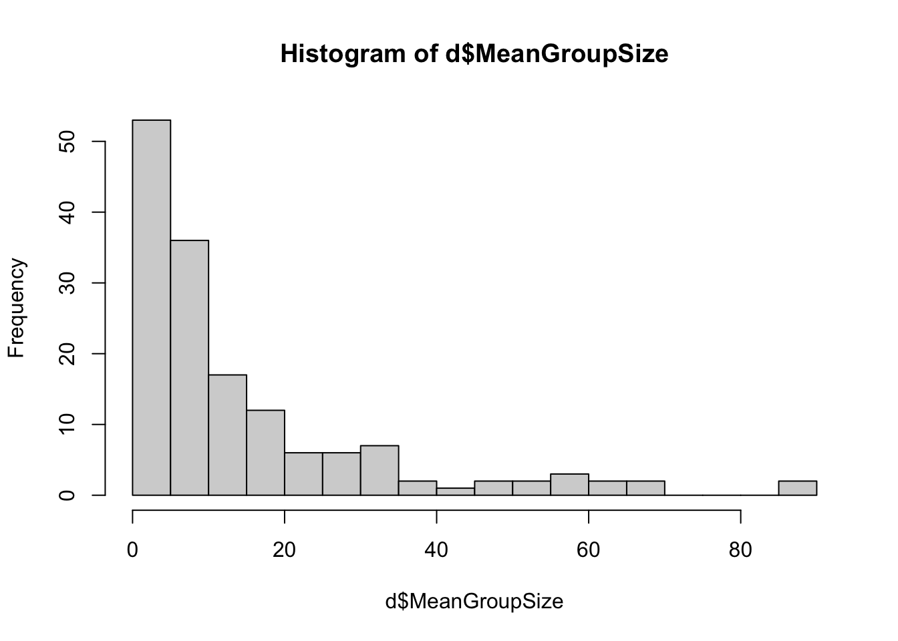

library(dplyr)
Attaching package: 'dplyr'The following objects are masked from 'package:stats':
filter, lagThe following objects are masked from 'package:base':
intersect, setdiff, setequal, unionlibrary(dplyr)
Attaching package: 'dplyr'The following objects are masked from 'package:stats':
filter, lagThe following objects are masked from 'package:base':
intersect, setdiff, setequal, uniond <- read.csv("https://raw.githubusercontent.com/difiore/ada-datasets/main/data-wrangling.csv")d$BSD <- d$Body_mass_male_mean/d$Body_mass_female_meand$sex_ratio <- d$AdultFemale/d$AdultMalesd$DI <- d$DayLength_km/(sqrt(d$HomeRange_km2/pi)*2)# Plot the distributions of the variables
hist(d$Move,30)hist(d$DayLength_km,30)# Both skewed, so do a log transformation
hist(log(d$Move),30)hist(log(d$DayLength_km),30)
# looks better
# Plot all sp
plot(log(d$Move), log(d$DayLength_km),
main = "Overall",
xlab = "Time Spent Moving (hr)",
ylab = "Day Range Length (km)",
cex = 1, pch = 16, col = rgb(0,0,0,0.5))# Plot each family
fml <- length(unique(d$Family))
par(mfrow = c(2, 4))
for (i in unique(d$Family)) {
d_fml <- d[d$Family == i, c(15, 21)]
d_fml <- na.omit(d_fml)
if (nrow(d_fml) >0) {
plot(log(d_fml$Move), log(d_fml$DayLength_km),
main = paste0(i),
xlab = "Time Spent Moving (hr)",
ylab = "Day Range Length (km)",
cex = 1, pch = 16, col = rgb(0,0,0,0.5))
} else {
next
}
}Overall, there might be a positive relationship showing that species spending more time moving generally travel farther. On a family level, due to limited points, Cercopithecidae, Atelidae and Lemuridae might have positive relationship between time spent moving and day range length.
# Plot the distributions of the variables
hist(d$MeanGroupSize,30)
hist(d$DayLength_km,30)
# Both skewed, so do a log transformation
hist(log(d$MeanGroupSize),30)hist(log(d$DayLength_km),30)# better
# Plot all sp
plot(log(d$MeanGroupSize), log(d$DayLength_km),
main = "Overall",
xlab = "Group size",
ylab = "Day Range Length (km)",
cex = 1, pch = 16, col = rgb(0,0,0,0.5))# Plot each family
fml <- length(unique(d$Family))
par(mfrow = c(2, 4))
for (i in unique(d$Family)) {
d_fml <- d[d$Family == i, c(8, 15)]
d_fml <- na.omit(d_fml)
if (nrow(d_fml) >0) {
plot(log(d_fml$MeanGroupSize), log(d_fml$DayLength_km),
main = paste0(i),
xlab = "Group Size",
ylab = "Day Range Length (km)",
cex = 1, pch = 16, col = rgb(0,0,0,0.5))
} else {
next
}
}Overall, there might be a positive relationship showing that species within larger groups generally travel farther. On a family level, except for Hylobatidae and Daubenonidae, others all show a somewhat positive relationship (despite the limited number of points).
hist(d$Canine_Dimorphism,30)hist(d$BSD, 30)# Transformation needed
hist(log(d$Canine_Dimorphism), 30)hist(log(d$BSD),30)# Plot all sp
plot(log(d$BSD), log(d$Canine_Dimorphism),
main = "Overall",
xlab = "Body Size Dimorphism",
ylab = "Canine Size Dimorphism",
cex = 1, pch = 16, col = rgb(0,0,0,0.5))# Plot each family
fml <- length(unique(d$Family))
par(mfrow = c(2, 2))
for (i in unique(d$Family)) {
d_fml <- d[d$Family == i, c("Canine_Dimorphism", "BSD")]
d_fml <- na.omit(d_fml)
if (nrow(d_fml) >0) {
plot(log(d_fml$BSD), log(d_fml$Canine_Dimorphism),
main = paste0(i),
xlab = "Body Size Dimorphism",
ylab = "Canine Size Dimorphism",
cex = 1, pch = 16, col = rgb(0,0,0,0.5))
} else {
next
}
}
Overall, taxa with greater body size dimorphism tend to exhibit greater canine size dimorphism. This relationship is particularly strong in families like Cercopithecidae and Cebidae, with Lorisidae and Hylobatidae showing weaker relationship.
# “frugivore” if fruits make up >50% of the diet, “folivore” if leaves make up >50% of the diet, and “omnivore” if diet data are available, but neither of these is true
d$diet_strategy <- case_when(d$Fruit > 50 ~ "frugivore", d$Leaves > 50 ~ "folivore", !is.na(d$Fruit) & !is.na(d$Leaves) ~ "omnivore")
# Boxplot of group size for species with different dietary strategies
boxplot(d$MeanGroupSize ~ d$diet_strategy, na.rm = T,
main = "Group Size by Diet Strategy",
xlab = "Diet Strategy",
ylab = "Group Size")Frugivores don’t live in larger groups than folivores.
d %>% mutate(Binomial = paste0(Genus, Species)) %>%
select(Binomial, Family, Brain_Size_Species_Mean, Body_mass_male_mean) %>%
group_by(Family) %>%
summarize(avg_brain = mean(Brain_Size_Species_Mean, na.rm = T),
avg_body = mean(Body_mass_male_mean, na.rm = T)) %>%
arrange(avg_brain) %>%
print()# A tibble: 14 × 3
Family avg_brain avg_body
<chr> <dbl> <dbl>
1 Tarsiidae 3.26 131
2 Cheirogalidae 4.04 193.
3 Galagidae 5.96 395.
4 Lepilemuridae 7.27 792
5 Lorisidae 8.67 512.
6 Lemuridae 23.1 2077.
7 Cebidae 23.9 1012.
8 Indriidae 27.3 3638.
9 Daubentonidae 44.8 2620
10 Pitheciidae 56.3 1955.
11 Atelidae 80.6 7895.
12 Cercopithecidae 85.4 9543.
13 Hylobatidae 101. 6926.
14 Hominidae 410. 98681.